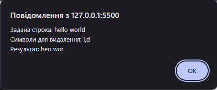
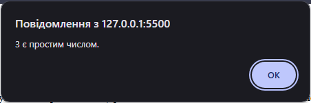
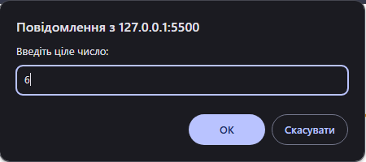
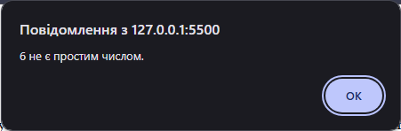
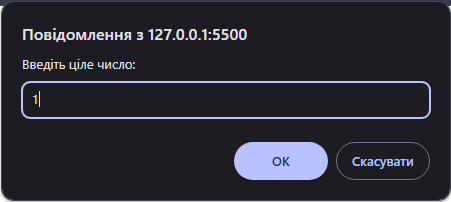
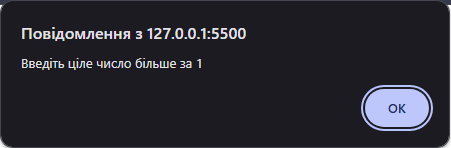

Просте число чи ні
Дано ціле число (ввести через 'prompt'). З'ясувати, чи просто воно (простим називається число, більше 1, що не має інших дільників, крім 1 і себе).
Скрипт:
const number = +(prompt('Введіть ціле число:'
if (isNaN(number) || number < 2){
alert('Введіть ціле число більше за 1')
} else {
let isPrime = true;
for (let i=2; i < number; i++){
if (number % i === 0){
isPrime = false;
break;
}
}
if (isPrime) {
alert(`${number} є простим числом.`);
} else {
alert(`${number} не є простим числом.`);
}
}
Результат:






Посилання на репозиторій github.com
Посилання на гілку на github.com